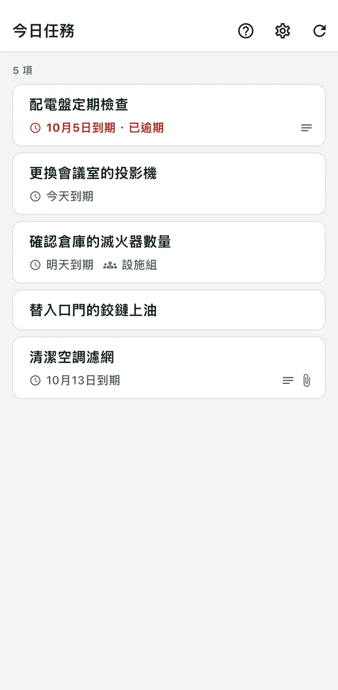
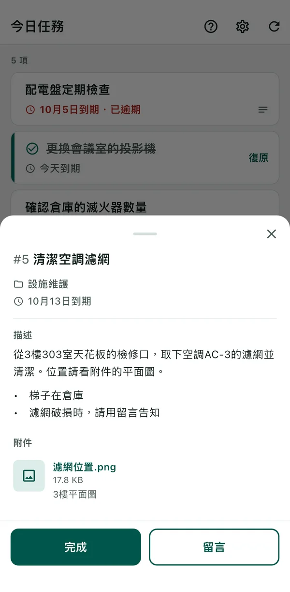

BeatMine for Redmine
支援
讓你在 iPhone 上用簡單的操作回報指派給自己的 Redmine 任務的 App。BeatMine 並非 Redmine 官方 App，與 Redmine 開發者無關。
- 只列出由自己或自己所屬群組負責、尚未完成的任務。群組負責的任務會顯示群組名稱。超過期限的任務以紅色顯示。
- 將任務向右滑動即可完成，也能馬上取消。
- 點一下任務，就能閱讀任務的描述與附件。圖片可以在 App 中開啟並放大。有描述或附件的任務，項目上會顯示圖示。
- 點一下任務即可傳送留言，內容會記錄在 Redmine 的歷史中。


需要準備的東西
- Redmine 6.0、6.1、7.0 其中之一。
- 能從這台裝置以 HTTPS 開啟該 Redmine。
- Redmine 已啟用 REST API（由 Redmine 管理員設定）。
- 自己的 API 金鑰。手邊沒有的話，可以從連線畫面的「在 Redmine 取得 API 金鑰」取得。
無法使用的環境整理在「不支援的項目」。
開始使用
- 開啟 App，輸入 Redmine 的 URL。
- 點「在 Redmine 取得 API 金鑰」。瀏覽器會開啟 Redmine，登入後複製顯示的 API 金鑰。回到 BeatMine，點「貼上並連線」。如果手邊已有 API 金鑰，也可以輸入後點「連線」。
- 畫面會顯示自己的任務清單。
遇到問題時
請找出畫面上顯示的文字。
連線時
如果顯示「無法連線到 Redmine。」，請確認原因。URL 和 API 金鑰的錯誤會顯示在該輸入欄下方，其他原因點「詳細資料」即可看到。
| 原因 | 可以做的事 |
|---|---|
| 「Redmine 的 URL 不正確。」 | 用裝置的瀏覽器開啟該 URL。如果打不開，可能是 URL 輸入錯誤，或是從公司外部連線到只限內部使用的 Redmine。 |
| 「API 金鑰不正確。」 | 重新輸入 API 金鑰。點「在 Redmine 取得 API 金鑰」，複製並貼上顯示的 API 金鑰。若 Redmine 前面還有其他登入（例如 Basic 驗證），就無法使用本 App。 |
| 「Redmine 的 API 已停用。請聯絡 Redmine 管理員啟用。」 | 請管理員在 Redmine 啟用 REST API。 |
| 「無法驗證 Redmine 的憑證。」 | 這台裝置無法驗證該 Redmine 的憑證。不支援使用私有憑證（僅在組織內部簽發的憑證）的 Redmine。尚未完成 Wi-Fi 的登入驗證，或裝置的日期與時間不正確時，也會顯示此訊息。 |
載入、完成、留言時
| 畫面上的文字 | 可以做的事 |
|---|---|
| 「網路錯誤」 | 請在收得到訊號的地方再試一次。Redmine 暫時沒有回應時也會顯示。 |
| 「已被其他使用者更新。請重新載入。」 | 其他人變更了該任務。請重新載入，確認目前的狀態後再操作。 |
| 「沒有完成的權限。」（留言、載入時也會顯示類似訊息） | 該 Redmine 不允許此操作。請洽詢 Redmine 管理員。 |
| 「有未完成的子任務。」 | 請先完成所有子任務。 |
| 「被未完成的任務阻擋。」 | 請先完成阻擋它的任務（Redmine 的「相關的議題清單」）。 |
| 「無法變更。」 | Redmine 沒有接受變更。完成時有必須填寫的欄位就會發生。這時請在 Redmine 的畫面上完成。 |
| 「無法確認是否已傳送。請重新載入。」 | 無法確認這次的變更是否已送達 Redmine。重新載入會再次確認。
|
| 「應用程式發生錯誤。請重新載入。」 | 重新載入仍無法解決時，可能是不支援的 Redmine（例如 6.0 之前的版本）。 |
查看描述與附件時
| 畫面上顯示的文字 | 可以做的事 |
|---|---|
| 「無法在 App 中開啟」 | 只有 20 MB 以內的圖片（JPEG、PNG、GIF、WebP、HEIC）能在 App 中開啟。PDF 等其他檔案，請在 Redmine 的畫面開啟。 |
| 「無法開啟連結。」 | 無法在裝置的瀏覽器中開啟描述裡的連結。描述的文字可以長按選取並複製，請貼到瀏覽器中開啟。 |
開啟圖片時出現的「網路錯誤」等訊息，與上面「載入、完成、留言時」相同。點「重試」即可重新載入。
其他常見問題
- 完成後變成了非預期的狀態（例如「已拒絕」）
- 會使用該任務可變更的結束狀態中，依 Redmine 狀態排序的第一個。設為哪個狀態會顯示在完成通知中。可以用已完成項目的「復原」（或完成通知的「取消」）恢復原狀。但重新載入清單之後，或 Redmine 不允許改回原本狀態時，就無法取消。這時請在 Redmine 的畫面上改回。Redmine 管理員變更狀態排序（把「已結束」排在「已拒絕」之前）後，選用的狀態就會改變。
- 取得 API 金鑰時要求輸入密碼（Redmine 7.0）
- 登入一段時間後，Redmine 會要求重新輸入密碼。輸入後就會顯示 API 金鑰。
- 清單中有些任務沒有出現
- 只顯示由自己或自己所屬群組負責、尚未結束，且開始日期不在未來的任務。已結束專案的任務也不會顯示。不依期限篩選。
- 群組的任務由誰來做
- App 不會決定。請在群組內互相聯繫，或在 Redmine 把負責人改為個人。群組的任務完成後，也會從同群組其他人的清單中消失。
- 描述中出現「h2.」「*」等符號
- App 會把描述當作 Markdown，只整理標題、清單、粗體、連結與程式碼。以 Textile 撰寫描述的組織的 Redmine，以及表格、嵌入的圖片，會以符號原樣顯示。
- 轉讓或淘汰裝置前
- 在「設定」中點「刪除連線」，即可從裝置清除 API 金鑰、留言草稿與未確認傳送的記錄。
不支援的項目
以下環境也許能運作，但未經確認。
- Redmine 6.0 之前的版本
- 安裝了外掛的 Redmine
- 雲端版（My Redmine、Planio 等）
- 私有憑證（僅在組織內部簽發的憑證）
- 設在 Redmine 前面的驗證（例如 Basic 驗證）
- SSO
聯絡我們
錯誤回報與意見，請用電子郵件寄送。
如果有 GitHub 帳號，也可以透過 GitHub Issue 傳送。Issue 任何人都能閱讀。
請勿填寫 API 金鑰、密碼、Redmine 的 URL、任務內容等不想讓他人知道的資訊。附上以下資訊，我們能更快回覆。
- App 版本（可在 iPhone 的「設定 > 一般 > iPhone 儲存空間 > BeatMine」確認。不知道的話可以省略）
- iPhone 機型與 iOS 版本
- Redmine 版本（如果知道）
- 畫面上顯示的文字（例如「網路錯誤」）與當時的操作
2026年10月3日 更新